Korekta kolorów zdjęć — przed i po
Przesuń suwak po zdjęciu. Lewa strona to wersja sprzed korekty, prawa — obecna na stronie.
Pokój z lampą (okładka pokoi)
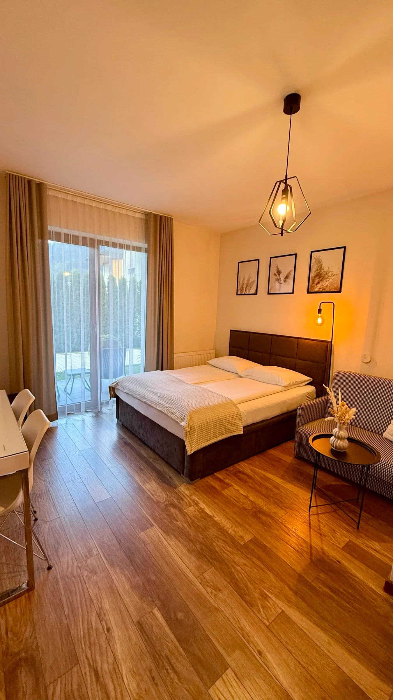
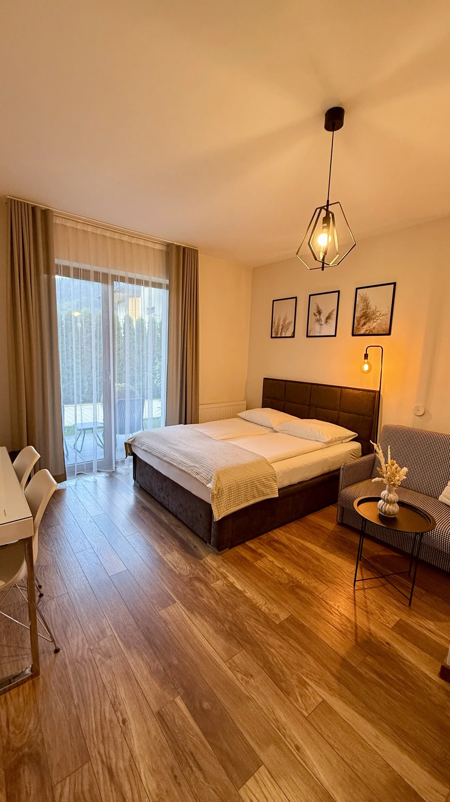
Apartament 3: bale i mech (sekcja 01)
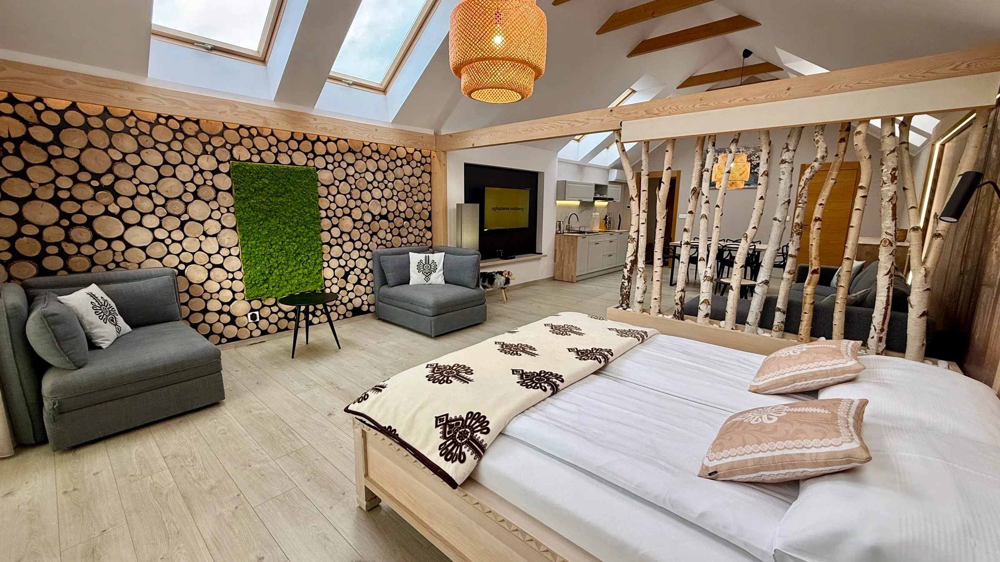
PRZEDPOApartament 3: jadalnia (karta na głównej)
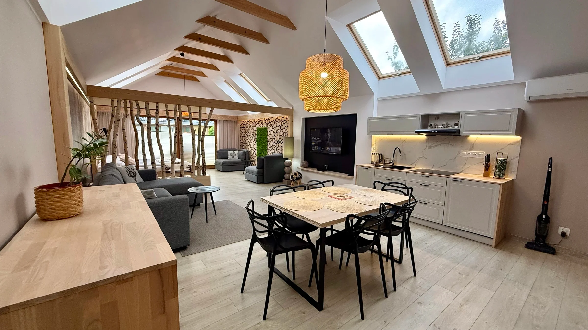
PRZEDPOApartament 1: salon
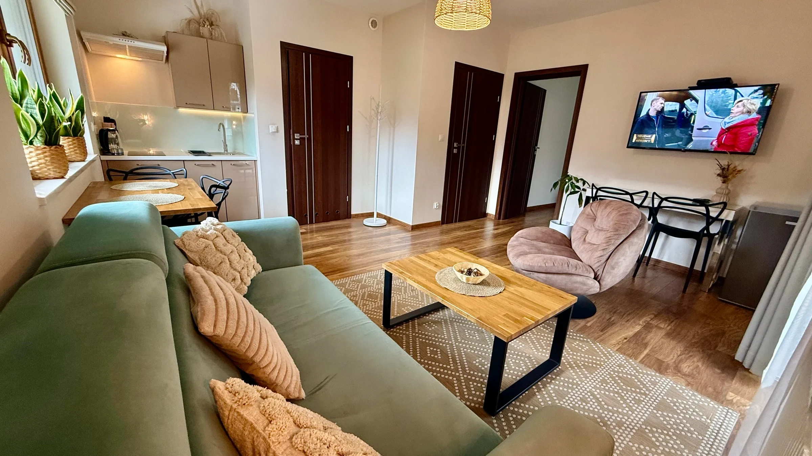
PRZEDPOApartament 2: salon
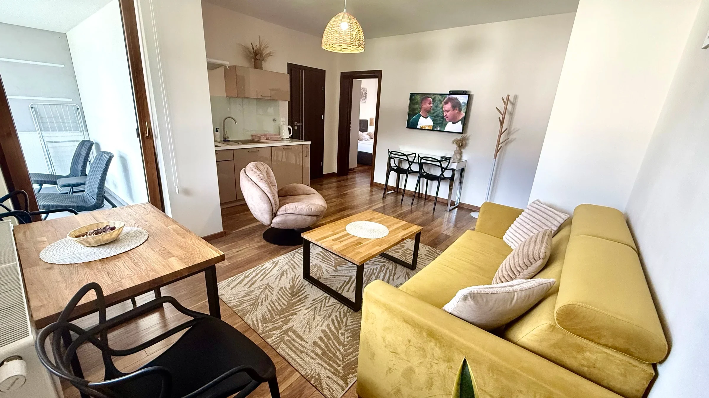
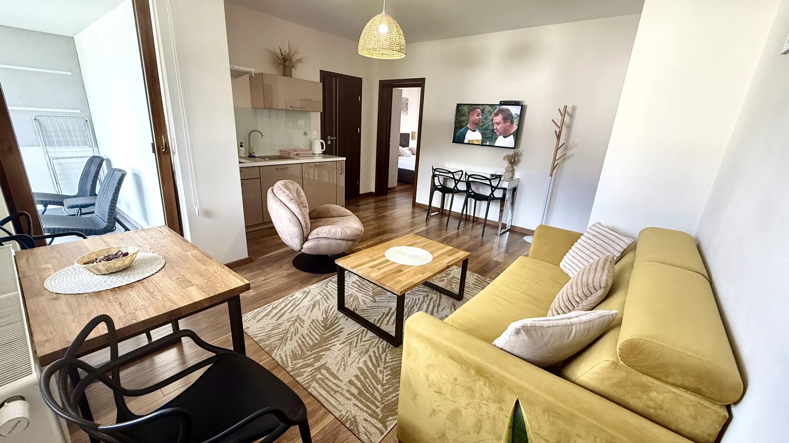
Wspólna kuchnia
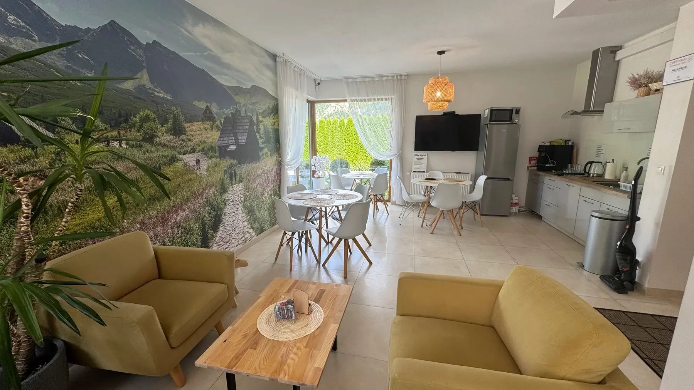
PRZEDPOWilla pod Trzema Koronami
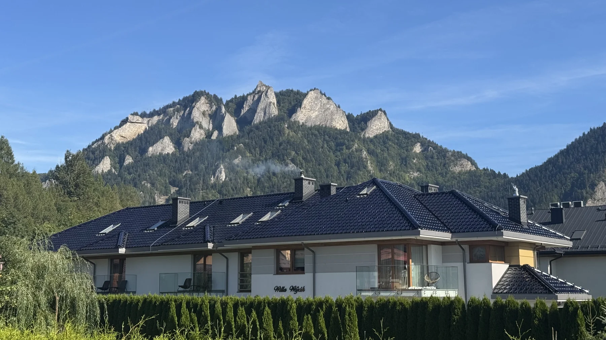
Pokój z lustrem
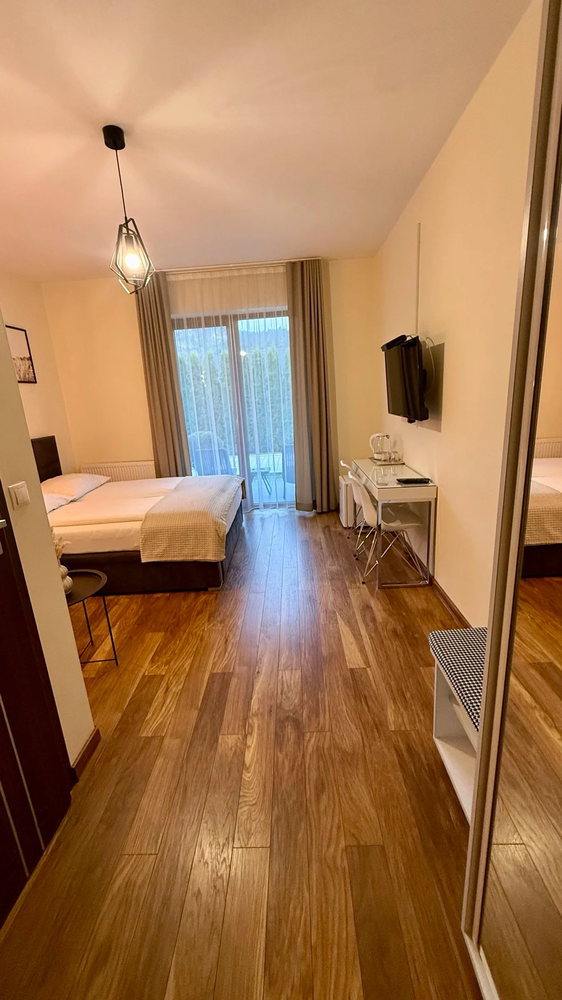
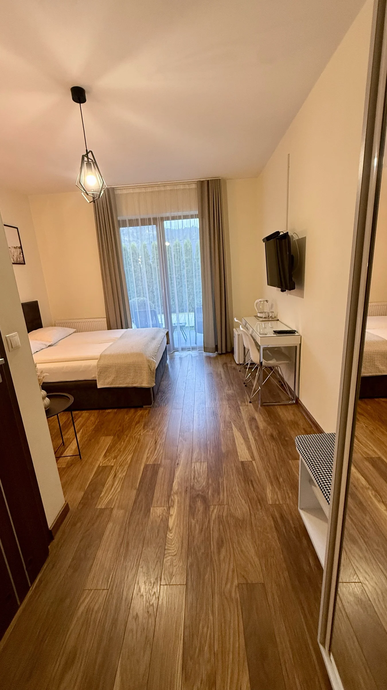